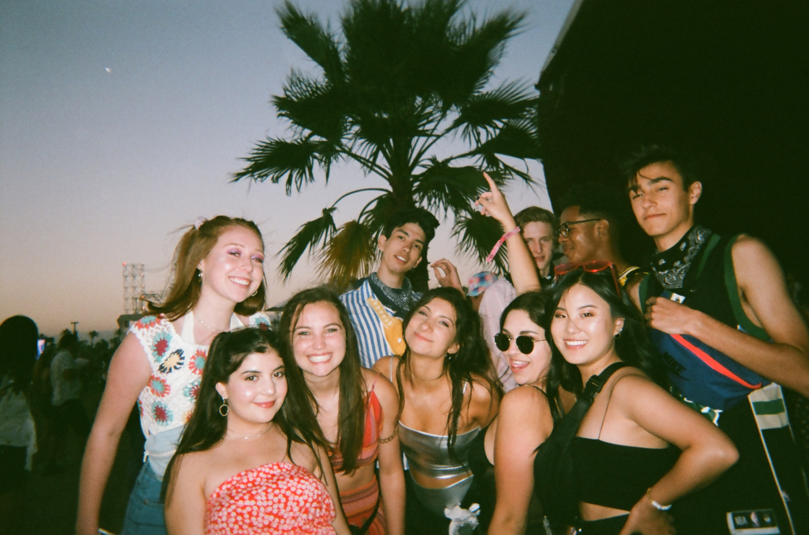
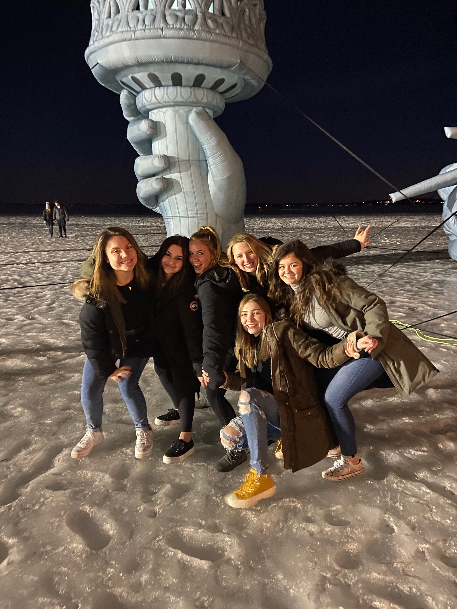

Hi! I am Alexa Rose and I am a sophomore at the University of Wisconsin.
I was born and raised in Los Angeles,California. I am undecided as to what I am studying but I am leaning towards human resources or marketing.
I was a cheerleader and played volleyball in highschool, but I was also very dedicated to photography and writing. I was the president of my community service group, The Assistance League, which strives to serve underprivileged youth in the foster care system.
I have one brother who goes to the University of Michigan and to say there is a rivalry between us would be an understatement.
I was weirdly obsessed with giraffes as a kid and strongly believed that donkeys were not a real animal.
I live in an off campus apartment this year and I am a member of Alpha Chi Omega sorority.
I have made incredible friends here at Wisconsin that I consider my family. I love to workout, watch movies, and just have fun in my free time.
Moving across the country for college was a big change but it was the best decision I have ever made.
I absolutely love Madison and can't wait for the next three years here!


About my website:
I created my own t-shirt business during the coronavirus quarantine this summer which I named "aroseandclothes".
I have dedicated my website to showcase or rather document my process of creating my business and what it evolved into.
I have also included my resume to provide additional context regarding who I am and what I enjoy doing.
I am so excited to share my business, explain how it started, and hopefully inspire you to set your mind to something and achieve it.
Enjoy!